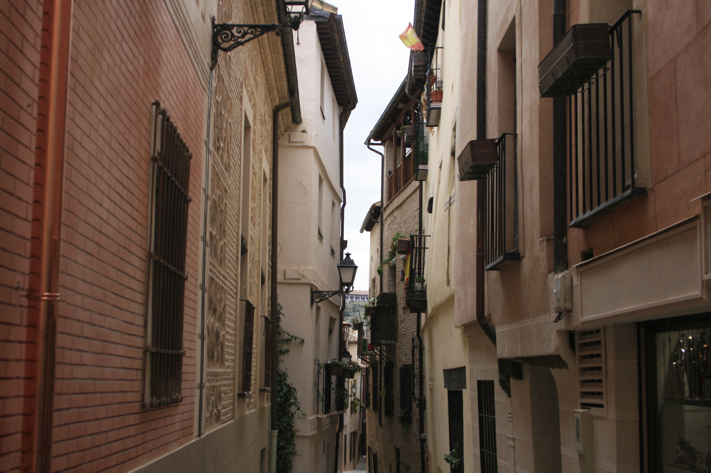

| Overview | Food | Architecture | Things to Do | History |
The heterogenious religious and medieval history and culture that shaped Toledo's history also shaped its architecture. The city is filled with buildings in the gothic and moorish style, including one of the most beautiful cathedrals in all of Spain, the Catedral de Toldeo, pictured above. The city stays cool due to the factors of it being on a hill as well as the Islamic expertise of placing the buildings in a way for air to easily pass through them and cool the streets. It is built very compact due to the Tagus River surrounding it, and it still has the main walls of the old city. Though hilly, it is an extremely easy city to walk, as due to its small size, everything is close. Many of the buildings feature innovative brickwork and sculpture techniques, and from many of the buildings, you can easily overlook the rolling hills and beauty of the La Mancha region, and the rest of the city.

A view down one of the city streets